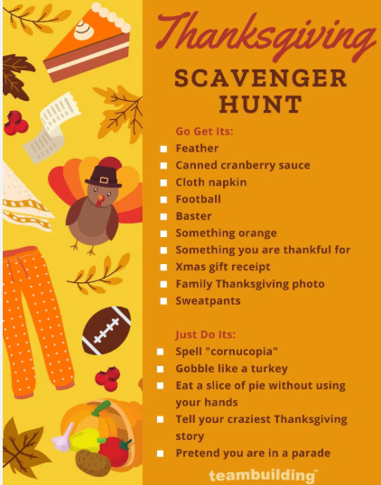
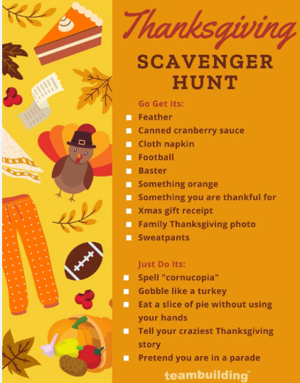
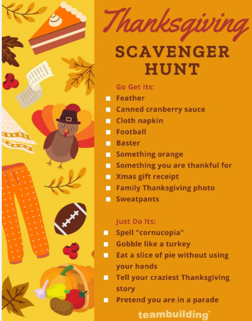
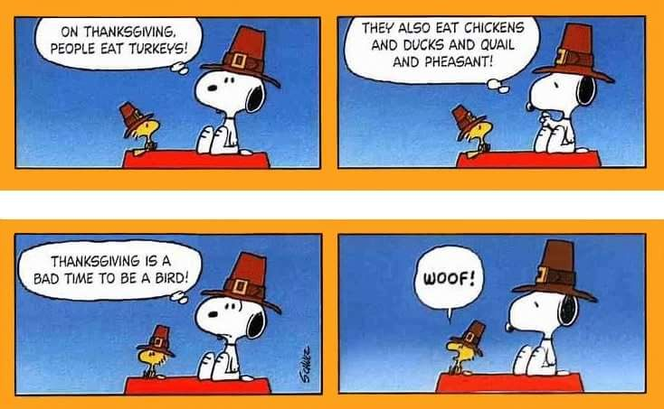
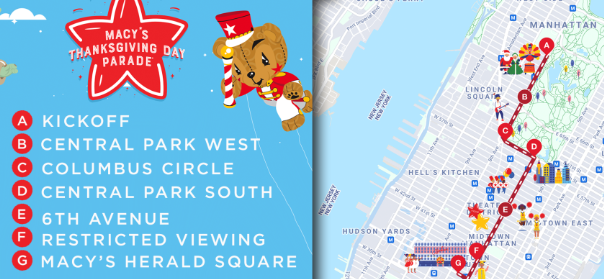
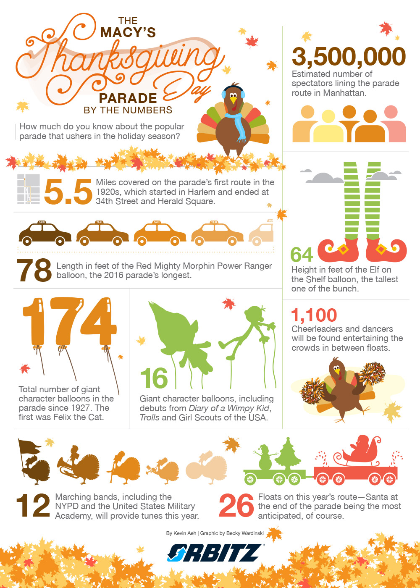
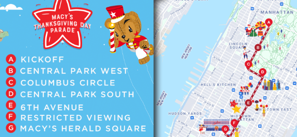
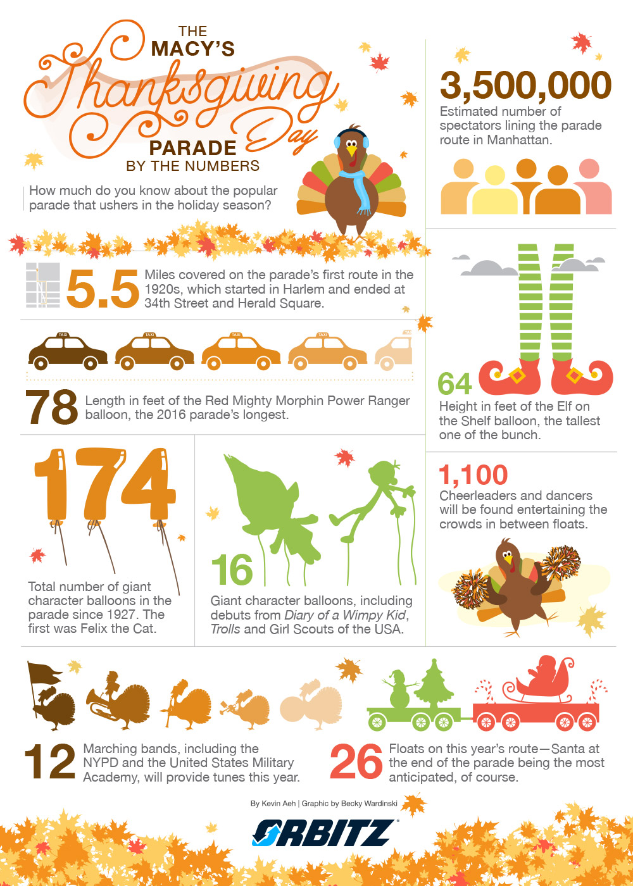

Features: Thanksgiving Games
Try to solve these complex puzzles and games before the end of Thanksgiving!
 


This edition of the Thanksgiving Chronicles can be best viewed on a laptop or chromebook.
Try to solve these complex puzzles and games before the end of Thanksgiving!

How can a Thanksgiving be well spent without some Snoopy comics?

If you're reading this, then we thank you for reading our entire chronicle for this Thanksgiving. We hope you have a happy Thanksgiving and a jolly rest of your year. Till then, we hope your turkey doesn't run out of flavor!
Oh, and one more thing: Here are some useful resources for you to use during your thrilling Thanksgiving day at the Macy's Thanksgiving Parade!
 


